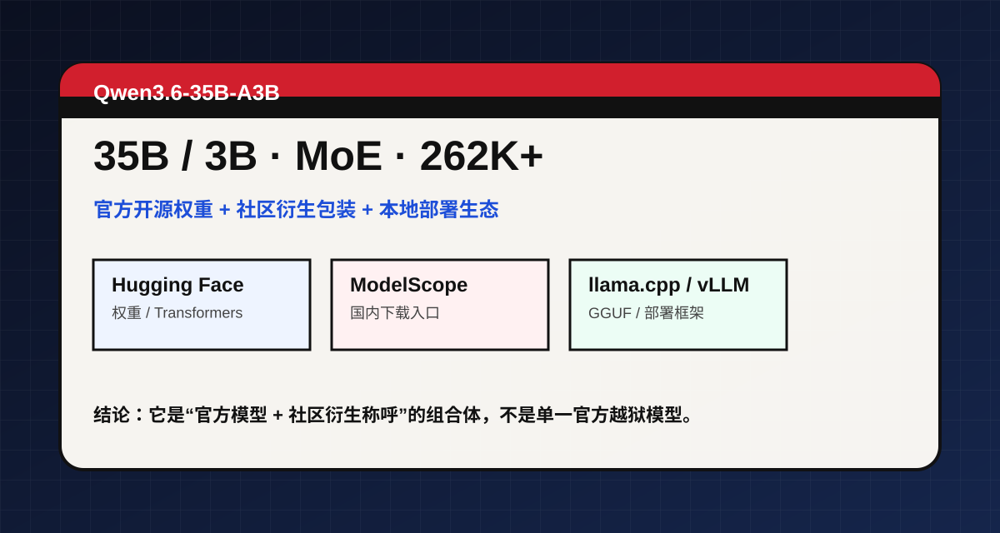

把“越狱版”先拆开：官方原版是 Qwen3.6-35B-A3B，社区常把带有 uncensored / aggressive 标签的量化包装也一起叫进来。这个卡只讲能被公开来源支撑的部分。

阿里通义实验室开源，公开新闻与转载一致指向 MoE、35B/3B、智能体编程、多模态。
本地部署教程、量化包、Unsloth / GGUF / llama.cpp 文章把它扩展成“能跑、好跑、低门槛”的本地模型。
“越狱版 / uncensored / aggressive”更像传播标题，不能直接等同于官方发布名。
| 项目 | 公开信息 | 备注 |
|---|---|---|
| 总参数 / 激活参数 | 35B / 3B | A3B 指的是每 token 只激活约 3B 参数。 |
| 架构 | MoE 稀疏混合专家 | 常见说法是 256 个专家，8 路由 + 1 共享。 |
| 上下文 | 262,144 tokens 原生 | 部分文章提到扩展后可达 1,010,000 tokens。 |
| 许可证 | Apache 2.0 | 公开评测文章和转载均这么写，适合商用与再分发。 |
| 能力定位 | Agentic Coding + 多模态 | 代码、仓库级推理、视觉理解是主打方向。 |
公开转载给出 51.5 分。
公开转载给出 73.4 分。
公开转载给出 85.3 分。
公开转载里常提到 RefCOCO 92、ODInW13 50.8。
Hugging Face、ModelScope、Qwen Studio，再到 vLLM、llama.cpp、Ollama、SGLang、KTransformers。
24GB 级显卡更常见；“6G 可跑”通常来自极端量化或强 offload 教程，不应默认当作标准门槛。